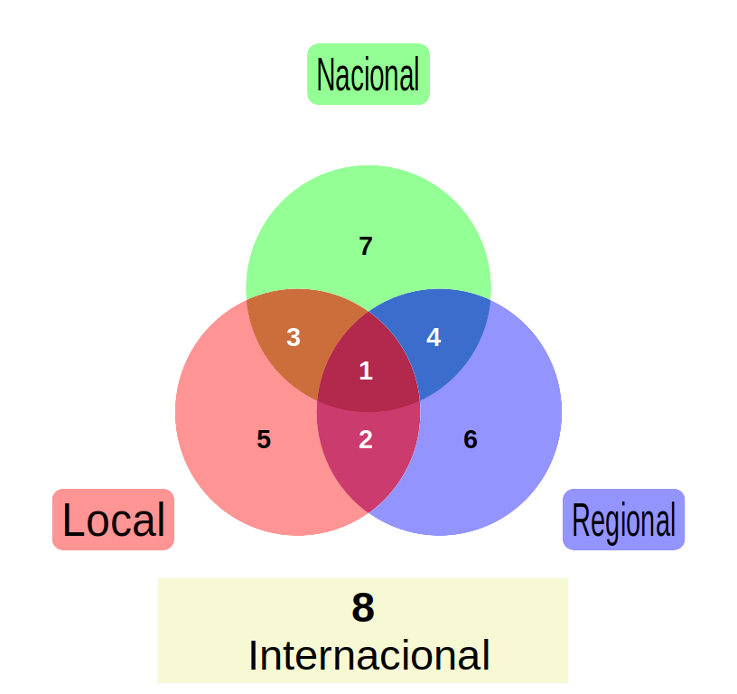
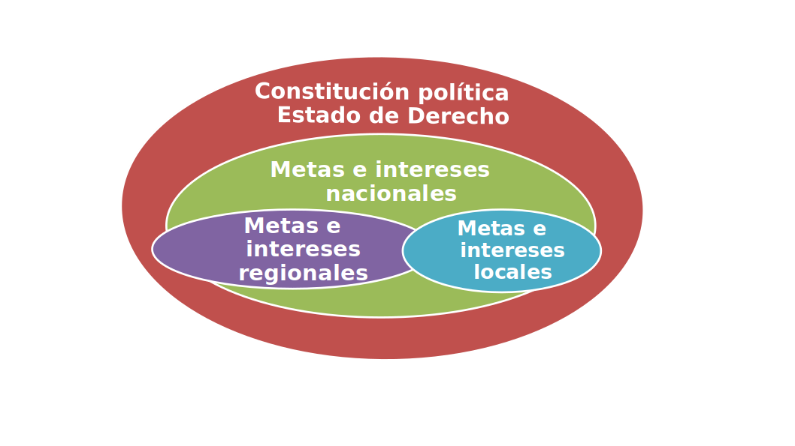

3 Modelo Policía para el Desarrollo Humano (PDH)
3.1 Concepto de Policía para el Desarrollo Humano (PDH)
El modelo PDH aterriza la seguridad humana a los cuerpos de policía, alineado con la cuarta revolución industrial. Este modelo de policía se concibe como una filosofía y estrategia para la construcción activa de la seguridad entre la ciudadanía y el Estado, con enfoque en la solución de problemas y necesidades en microterritorios multicrimen, analizados a través de la ciencia de los datos e inteligencia artificial, para prevenir las crisis, las causas estructurales de la violencia y el delito; y así, mejorar el desarrollo humano, reducir las tasas de criminalidad y mantener el Estado de Derecho.
Para el caso de la PDH, un microterritorio multicrimen, es una zona rural o urbana donde se concentran diferentes delitos y violencia, lo cuáles son identificados a través de la ciencia de los datos, al igual que, los actores y redes criminales que actuan en allí. Así, se establecen las intervenciones integrales del Estado en lo local, y la estrategias policiales.
3.2 PDH en la coordinación del Estado basado en problemáticas de los microterritorios multicrimen.
La coordinación intergubernamental e interinstitucional, sea bien en un estado centralista o federalista, siempre, es compleja, y más aún cuando no se comparte la misma ideología. Por ello, se pretende hacer consensos entre las problemáticas identificadas y priorizadas, de las que dependen de las afectaciones ciudadanas, y articularlas con las políticas públicas, para atacar las causas estructurales de la violencia y de los delitos que afectan el orden público.
3.2.1 Identificación de problemáticas por interacciones espaciales
En la gráfica siguiente, se busca identificar las problemáticas según los ámbitos internacional, nacional, regional y local, priorizando, este último, como lo principal desde la lógica glocal “piensa global, actua local”, las problemáticas locales afectarán los demás ámbitos, pues todo converge en los barrios, comunas, localidades y microterritorios.

Interacción 1: se puede generar en varias zonas locales y regionales, su impacto es local, regional, nacional y/o internacional; es la más compleja de las problemáticas, por ejemplo, la explotación sexual de niños, niñas y adolescentes.
Interacción 2: se genera en varias zonas locales de una misma región y su impacto va hasta lo regional, por ejemplo, el abigeato.
Interacción 3: se genera en una zona local específica y su impacto es nacional, por ejemplo, falsificación de medicamentos.
Interacción 4: identificar la zona local donde se genera es difusa, entonces, se genera en varias zonas de una región y llega hasta el impacto nacional, por ejemplo, el tráfico de cocaína.
Interacción 5: se genera en lo local pero solo impacta allí mismo, por ejemplo, las lesiones personales por riña.
Interacción 6: se genera en varias zonas de región y su impacto se limita a esta misma, por ejemplo, el asalto a buses de servicio intermunicipal.
Interacción 7: la zona local y regional donde se genera es difusa, su impacto es nacional y/o internacional, por ejemplo, la corrupción o el lavado de activos.
Interacción 8: pueden ser generadas desde el interior del país con impacto a otros países, por ejemplo, el tráfico ilegal de oro en zonas fronterizas. También, aquellas que vienen del exterior al país, por ejemplo, ciberataques a los sistemas de información del Estado.
En ALC no existe una comprensión profunda de las problemáticas subregionales, debiendo ser identificadas y comprendidas. Han existido avances desde la perspectiva de los cuerpos de policía, muestra de ello es la creación en el 2007 de la Comunidad de Policías de América (AMERIPOL), para combatir el crimen organizado trasnacional, en la actualidad se encuentra en el trabajo de identificación de problemáticas propias del continente.
El ámbito internacional requiere ser estudiado, más pro- fundamente, desde las ciencias de policía, para identificar la configuración del ente policía a nivel internacional, pues se podría entrar en la discusión si organismos de cooperación multilateral, como Naciones Unidades o la Organización de Estados Americanos, mediante tratados, acuerdos o convenios ¿Son quienes regulan en el ente policía? O ¿Los gobiernos con toda su institucionalidad administran la función de policía? U organismos de cooperación policial multilateral como AMERIPOL ¿pueden ejecutar la función de policía? O en qué nivel de influencia tienen, al igual que la voluntad de cada Estado que rol juega en el ente policía.
A pesar de que su fin es la convivencia y debe protegerla, pero los intereses propios de los Estados donde quedan. En consecuencia, es necesario realizar aproximaciones teóricas que permitan comprender mejor el ente policía e investigaciones que amplíen el conocimiento del ámbito internacional.
Por otro lado, no se puede obviar el concepto del mundo de poder compartido (en inglés: Shared-Power World), es decir, cuando no hay organización o persona que controle alguna situación completamente, puesto que la nueva comprensión y reconocimiento de la complejidad e interdependencia que el mundo presenta, surge de un número de interconexiones y causas que producen muchas consecuencias interconectadas (Crosby & bryson, 2005).
Los autores definen que el mundo de poder compartido, en el ambiente de la política pública, está también altamente interconectado, en este muchos individuos, grupos y organizaciones tienen una parcial responsabilidad, para actuar sobre los problemas públicos, pero no el suficiente poder para resolver los problemas solos; el poder es fragmentado, la toma de decisiones es confusa, aparentemente caótica y presenta formas de coalición cambiantes y disipadas.
Para mejorar las condiciones de seguridad ciudadana, que impacten en el desarrollo humanos de las personas, la PDH debe entender los conceptos anteriores y que, si no hay colaboración y hasta cierto tipo de fusión interinstitucional e intergubernamental, no será posible dar solución a los problemas y atacar las causas que los generan.
Es decir, la violencia y el delito son tan complejos que es imposible que una sola organización, como los cuerpos de policía, lo puedan llegar a hacer. De igual manera, son muchas personas tomando decisiones y planeando actividades, entonces, entender esta dinámica del mundo es fundamental.
3.2.2 Instancias de coordinación
Para los gobiernos uno de los grandes retos está ligado a motivar entes gubernamentales y otros sectores, para realizar alianzas multisectoriales a fin de limitar sus actividades en áreas discretas de su responsabilidad. Pues, la criminalidad es considerada una responsabilidad de la policía y del sistema de justicia, pero, otros actores, en algunas ocasiones, no están dispuestos a cooperar, disponer recursos o brindar información (UNODC, 2010), generando una desarticulación de Estado e incapacidad para la solución de los problemas públicos.
Es necesario lograr la coordinación entre cada uno de los actores comprometidos, para que debatan las soluciones a las problemáticas encontradas y así diseñar políticas públicas intersectoriales, intergubernamentales e interinstitucionales, con participación activa de la comunidad, que logren atacar las causas estructurales de la violencia y el delito. Estas políticas públicas fundamentadas, en la filosofía y estrategia de la PDH, requieren ser construidas en escenarios, para la toma de decisiones, porque de nada sirve la buena voluntad si no se concreta por parte del estado y las partes interesadas la asignación de objetivos, recursos, sistemas de información, financiación, estrategias, programas, proyectos, indicadores, seguimiento y evaluación.
La Guía metodológica, para la elaboración, implementación y seguimiento de los Planes Integrales de Seguridad y Convivencia Ciudadana (PISCC) ver (Ministerio del Interior, Departamento Nacional de Planeación, Alta Consejería Presidencial para la Convivencia y la Seguridad Ciudadana, Policía Nacional, 2013), en Colombia, ofrece una metodología que podría ser referente, para la coordinación del Ente Policial y de esa forma atacar las casusas estructurales de la violencia y el delito. Basados en las problemáticas identificadas, la siguiente gráfica presenta seis momentos de esta metodología del PISCC:
Momento I: conocimiento del marco normativo de políticas públicas.
Momento II: elaboración del diagnóstico de la situación de seguridad y convivencia ciudadana.
Momento III: formulación estratégica del PISCC.
Momento IV: planeación financiera y operativa.
Momento V: implementación y seguimiento del PISCC.
Momento VI: evaluación.
Esta coordinación interagencial debe satisfacer las metas e intereses de cada uno de los actores comprometidos, pues, el identificar problemáticas comunes no significa que todos quieran atacar las causas estructurales de la violencia y el delito de la misma forma, o que posean los mismos intereses y necesidades.
En efecto, puede ser que todos tengan problemas con el hurto de celulares de la alta gama, en el ámbito regional, pero dentro de esta región, en una de sus localidades, se relaciona este crimen con la causa delito aspiracional, y en otra localidad se relaciona con la causa baja movilidad social. La siguiente gráfica muestra cómo se podrían articular estas metas e intereses.

La gráfica anterior no pretende ser impositiva sobre los niveles territoriales, sino coordinados en sus metas e intereses, logrando sinergia en políticas públicas. Para que esta coordinación se produzca, es de imperiosa necesidad usar, potenciar o crear las instancias de coordinación como consejos, comités, convenios, acuerdos y demás. Y buscar que de ellos salgan las decisiones y los financiamientos de las políticas públicas y estrategias.
3.3 PDH en la política pública de seguridad
Reducir las causas estructurales de la violencia y el delito implican acciones integrales del Estado con enfoque en lo local, en este caso la PDH se articula en esa institucionalidad, se presentan las siguientes temas de intervención, de los cuáles se desprenden decisiones en los escenarios de articulación:
3.3.2 Participación comunitaria
La participación de la comunidad en diseño de políticas bien sea buttom-up (desde la comunidad hacia el Estado) y top-down (desde el Estado hacia la comunidad).
Se brindan espacios de socialización, como la familia, la escuela y la comunidad donde el ciudadano participa activamente en el despliegue de las políticas de seguridad ciudadana.
Espacios de participación de los jóvenes, en la construcción de soluciones, adecuadas, para la seguridad ciudadana, debe incluir su perspectiva del mundo y mirada de futuro.
3.3.3 Comunicaciones
Estrategias de comunicación segmentadas por cada público, población, cultura y edad.
Se evita fortalecer los estereotipos negativos de sociedad, un ejemplo se presenta cuando en muchas series de televisión la narcotraficante figura que ayuda a los pobres, pero por otro lado asesina a muchas personas, es decir el malo que es bueno.
Reducción al temor al delito, y emplear, adecuadamente, los medios de comunicación masivos del orden local, regional y nacional, como también las redes sociales e internet.
Mensajes positivos y negativos de los medios de comunicación y redes sociales entre otros.
Acciones para entender los escenarios de la sociedad de la información y usar las tecnologías de la información y la comunicación, para llegar a todos los grupos poblacionales posibles, sin enfocarse únicamente en eventos de asistencia masiva, sino también en pequeñas acciones, pero constantes en el ámbito local.
3.3.4 Educación ciudadana
Educar hacia la cultura ciudadana, tolerancia y empatía.
Transmisión intergeneracional de valores en familias.
Cambiar el comportamiento de las personas, en el marco de los nuevos valores sociales, y enseñar el discernimiento de los mensajes que la sociedad mediante el simple hecho de tomar lo bueno y desechar lo malo.
3.3.5 Cooperación interinstitucional e internacional
Diseño e implementación de políticas públicas, para luchar contra el crimen organizado nacional y transnacional, articular acciones, desde lo local hasta lo internacional.
Anticipar la limitación de capacidades frente a fenómenos delictivos, que superan las capacidades institucionales.
Utilizar los instrumentos de cooperación interinstitucional e internacional vigentes.
3.3.6 Protección de los derechos humanos
Estrategias asertivas de aplicación de la Ley.
Atención de los requerimientos ciudadanos complejos de una sociedad, como la protesta social, para evitar al máximo el uso de la fuerza.
Acciones para la mejora de la eficiencia de la justicia y la política criminal.
3.3.7 Transparencia y rendición cuentas
Eventos de rendición de cuentas a la ciudadanía, como obligación, de un actor, de informar y explicar sus acciones a otro(s) que tiene(n) el derecho de exigirla.
Facilitar el acceso a la información y veeduría pública.
Estrategias para la prevención y disminución de los índices de corrupción al interior de las entidades encargadas de las seguridad y convivencia ciudadana.
Identificar las redes criminales, carteles, de la corrupción estatal, donde participan ciudadanos, servidores públicos y privados.
3.3.8 Seguimiento y evaluación
Seguimiento, monitoreo y evaluación permanente de la eficacia y efectividad de los planes y programas de convivencia y seguridad ciudadana.
Adaptación de los planes de acción a las necesidades y prioridades actuales, y a los impactos futuros deseados.
Estabilidad y continuidad de las estrategias con buenas prácticas.
Adaptación de soluciones traídas de otros países u zonas que han sido exitosas, al entorno, cultura, recursos y aceptación de la ciudadanía local.
Las evaluaciones de impacto deben incluir un ente externo al control interno institucional, y la ciudadanía.
3.3.9 Prevención sostenible
Diseñar políticas y programas de prevención sostenida en el tiempo y espacio de la reducción de la violencia y el delito.
Reducción de acciones inmediatas represivas, y aquellas que han fracasado.
Estrategias de reducción de enfocarse en las personas más débiles y fáciles de capturar y condenar, hacía los delincuentes más sofisticados y violentos.
Enfoque en mitigar las causas de la violencia y el delito.
Anticipar la ocurrencia de hechos delictivos y fenómenos sociales negativos para la seguridad, por ejemplo, mediante el uso de analítica de datos para anticipar las innovaciones tecnológicas criminales.
3.3.10 Gestión de las crisis
Sinergia entre actores para los escenarios de antes, durante y después de la crisis.
Prevenir futuros conflictos, que requieren esfuerzos, para fortalecer la capacidad policial, justicia y sistema correccional, que pueden desencadenar en un conflicto, por ejemplo, vandalismo.
Atención oportuna y eficaz de las crisis según su complejidad en sitios geográficos específicos, durante un tiempo determinado.
3.3.11 Propuestas de políticas públicas y financiación
Diseño e implementación para intervenir conjuntamente la sociedad civil, las entidades privadas y las instancias gubernamentales, en sus distintos niveles, para solucionar problemas de diferentes tipos, como: económicos, sociales, de infraestructura, ambientales.
La articulación de esfuerzos con financiación y asignación de recursos, por parte de los responsables de poner en marcha las políticas públicas.
Diseño participativo de las políticas para que no sean aisladas y permitan lograr al resultado esperado.
Medición de impacto de las políticas.
3.3.13 Planificación urbana y rural
Articulación del planeamiento urbano y rural realizado por las autoridades del orden local, regional y nacional con la seguridad.
Anticipar o estimar los impactos en la seguridad ciudadana de los cambios en el uso del suelo, la creación de nuevas vías, sistemas de transporte, la autorización de construcciones de mayor altura o el cambio de sentido de una autopista, entre otros.
3.3.14 Control y disuación
Identificación de las cotas superiores e inferiores del delito por cada unidad territorial.
Involucrar ciudadanos y grupos sociales para la protección del territorio del delito, por ejemplo, frentes de seguridad ciudadana.
Diseño de estrategias basadas policía de orientación comunitaria, policía orientada a la solución de problemas con el proceso SARA (escaneo, análisis, respuesta y evaluación), policía guiada por la inteligencia; y la estrategia de policía basada en incidentes.
3.3.15 Innovación local
Mejora de los estándares y procesos de calidad frente a la prestación de servicio de seguridad al ciudadano.
Creación de soluciones de base comunitaria, que nacen de la interacción de aquellos que poseen un problema y necesitan solucionarlo.
Impulso de soluciones basadas en la glocalidad “pensar globalmente, actuar localmente”.
3.4 PDH en la gestión de los cuerpos de policía
Cada cuerpo de policía tiene sus particularidades y realidad local, los siguientes temas son actividades o procesos que deben ser mínimos en la gestión interna del cuerpo de policía.
3.4.1 Procesos de prevención, disuasión y control del delito, inteligencia y policía judicial
Vincular en su misión a las partes interesadas, con una amplia participación en las decisiones, control y desarrollo de las actividades.
La trasparencia en los procedimientos policiales, donde el ciudadano los puede seguir y observar permanentemente.
Diseño de soluciones de mano inteligente, que privilegian la prevención y anticipación del delito.
Atención inmediata en territorio de las necesidades básicas individuales en seguridad ciudadana.
3.4.2 Análisis del entorno
Se identifican factores de contexto de tipo Político, Económico, Social, Tecnológico y Ambiental –PESTA–, que están fuera del control de la policía y se le suma el factor Criminal (C) y el de la organización policial (P), así: PESTA+CP.
Analizar los cambios y nuevos retos en seguridad ciudadana, inclusive con la prevención, atención y resiliencia de las crisis de factores que afectan la convivencia y que ponen en peligro el desarrollo normal del Estado de Derecho.
3.4.3 Medición de resultados
Los indicadores policiales deben enfocarse en medir el impacto de la solución de las causas estructurales de la violencia y el delito en el contexto local, en las estadísticas de capturas, recuperaciones, incautaciones, etc, y las afectaciones a la convivencia.
Evaluación de la efectividad para verificar el funcionamiento del modelo de evaluación integral y hacerlo incluyente de los diferentes actores (comunidad, empresas, autoridades) y partes interesadas (comunidad internacional, las ONG) tanto a los resultados, como a los responsables de generar estos.
Los indicadores miden la implementación de las estrategias y las consecuencias perdurables, con el objetivo de lograr una mayor proximidad con la comunidad.
Los indicadores miden la percepción ciudadana respecto de acciones policiales y desempeño policial, por ejemplo, los provenientes de encuestas de victimización y percepciones de seguridad.
Se identifica y mide la brecha entre la expectativa y la realidad con respecto al accionar policial y la percepción sobre la calidad del servicio efectivamente entregado al público.
3.4.4 Control de externalidades
Identificar los efectos indirectos no compensados, que producen el servicio de policía, por ejemplo, mayor población flotante por una nueva unidad policial.
Acciones para externalidades positivas: cuando los efectos de las actividades policiales mejoran, de alguna manera, las oportunidades de la comunidad.
Acciones para las externalidades negativas: cuando los efectos de las actividades policiales son nocivas para la comunidad.
Acciones para la externalidad posicional: relacionado con el uso inadecuado o derroche de recursos personales, sociales y tiempo, que no genera un impacto óptimo en la comunidad, ni mejora la imagen de la policía.
3.4.5 Tecnología, movilidad e infraestructura
Implementar el uso de herramientas del servicio en materia de infraestructura, sistemas de información, comunicaciones, movilidad, robots, sistemas de video vigilancia, modelamiento y simulación, análisis de datos, sistemas de información geográfica, internet, entre otros.
Disponer el uso de herramientas tecnológicas para el ciudadano, por ejemplo las denuncias online o la revisión de antecedentes.
3.4.6 Sistemas de gestión y calidad
Aplicación de los modelos de gestión y certificaciones de calidad en el servicio de policía.
Propuesta de cambio y mejora en los procesos, procedimientos, guías entre otros.
Generación de documentos doctrinales como manuales, reglamentos, etc.
3.4.7 Profesionalización
Gestión del conocimiento: es la generación y apropiación del cono- cimiento mediante la construcción colectiva, que puede ser utilizado por parte de los policiales en el servicio.
Formación, entrenamiento y capacitación: cursos, seminarios, diplomados, pregrados y posgrados, así como momentos de discusión que fortalezcan la doctrina policial y las ciencias de policía.
Perfiles y competencias: es la articulación del ser (principios y valores éticos), saber (conocimiento) y saber hacer (experiencia) para los diferentes cargos y servicios que los policías ocupan.
Transferencia de conocimiento: es la capacidad del cuerpo de policía, para integrar a su gestión y divulgar el conocimiento organizacional a los nuevos y antiguos policías, a la sociedad y a las autoridades políticas.
3.4.8 Relaciones con la comunidad
Participación ciudadana en las decisiones con el fin de integrar las preguntas, quejas, reclamos y sugerencias en la gestión de la organización, pero no solo para dar repuesta al ciudadano, sino con insumo para la toma de decisiones policiales de corto, mediano y largo plazo.
Cocreación: como es tenida en cuenta la comunidad en el diseño de soluciones a las necesidades y situaciones que van apareciendo.
3.4.9 Prevención y anticipación del delito
Acciones planeadas en el corto y mediano para organizar el servicio de policía según los requerimientos ciudadanos y los análisis delictivos.
Despliegue de la oferta de prevención por cada delito.
Aplicación oportuna de normas de convivencia.
3.4.10 Autonomía local
Atender las necesidades básicas, insatisfechas de seguridad ciudadana, en pequeñas microterritorios multicrimen.
Establecer metas a nivel territorial de tasas delictivas y ocurrencia de delitos.
Alineación de metas con los planes de desarrollo locales.
Gestión de recursos y financiación en lo local de las estrategias de seguridad y convivencia.
3.4.11 Cultura y comunicaciones
Gestionar los mensajes, imágenes y textos, cuyo efecto si contribuye a moldear subjetividades.
Generar comunicación a través de mensajes, imágenes, videos y textos, para llegar acertadamente a la ciudadanía.
Construir una legitimidad del cuerpo de policía para afectar positivamente, los resultados y las relaciones con la comunidad.
Evaluar la evolución de cambio, por ejemplo, encuestas de percepción de la policía.
Estrategias de comunicación interna, que permita concientizar a la mujer y hombre policía de la importancia de su labor frente a la mejora del desarrollo humano de la comunidad.
Disminuir la resistencia a las actividades de control del servicio de policía.
3.4.12 Políticas organizacionales
Articular las políticas gubernamentales con las institucionales.
Aplicar las políticas del nivel central, de forma sostenible, constante y cubrir las diferentes áreas del cuerpo de policía, por ejemplo, política de ubicación laboral.
3.4.13 Liderazgo policial
Buscar situaciones de no confrontación con los ciudadanos.
Fomentar el relacionamiento, como la capacidad institucional, que permite vincular positiva y críticamente a las personas al servicio de policía.
Motivar a los ciudadanos organizados -integrantes de juntas o comités zonales- y no organizados -ciudadanos de a pie- a participar en las actividades de la policía, como también en los medios de comunicación y redes sociales.
Realizar Alianzas Público Privadas –APP–. En este entendido, se debe vincular el sector privado en la creación conjunta de seguridad con los ciudadanos y la policía.
3.4.14 Autocontrol
Identificar las áreas de mejora y fallas en el servicio de policía.
Acciones en contra de la corrupción.
Control en la mejora de prestación del servicio de policía
Fomentar el autocontrol personal en los procedimientos.
3.4.15 Respuesta ante las crisis
Planear las acciones antes, durante y después de una crisis.
Facilitar las condiciones necesarias de seguridad ciudadana, para el desarrollo humano en cada una de las etapas de la crisis.
Durante un escenario de crisis, buscar primordialmente la protección de la población y el mantenimiento o restablecimiento del Estado de Derecho.
3.4.16 Respeto de los derechos humanos
Actividades de promoción y difusión de los derechos humanos.
Acciones para mantener la disciplina.
Facilitar la denuncia contra funcionarios.
Capacitación en derechos humanos.
Validación de procedimientos por parte del ministerio público.
Comunicación con organizaciones protectoras de derechos humanos.